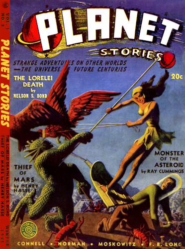
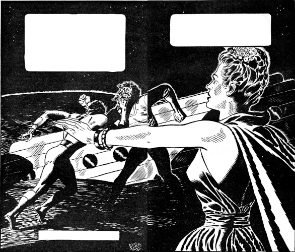

Far out in limitless Space she plied
her deadly trade ... a Lorelei of the
void, beckoning spacemen to death and
destruction with her beautiful siren lure.
[Transcriber's Note: This etext was produced from
Planet Stories Winter 1941.
Extensive research did not uncover any evidence that
the U.S. copyright on this publication was renewed.]
Chip Warren stood before an oblong of glass set into one wall of the spaceship Chickadee II, stared at what he saw reflected therefrom—and frowned. He didn't like it. Not a bit! It was too—too—
He turned away angrily, ripped the offending article from about his neck, and chose another necktie from the rack. This one was brighter, gaudier, much more in keeping with the gaiety of his mood. He emitted a grunt of satisfaction, spun from the mirror to face his two companions triumphantly.
"There! How do you like that?"
Syd Palmer, short and chubby, tow-headed and liquid-blue of eye, always languid save when engaged in the solution of some engineering problem concerned with the space vessel he mothered like a brooding hen, moaned insultingly and forced a shudder.
"Sunspots! Novae! Flying comets! And he wears 'em around his neck!"
"You," Chip told him serenely, "have no appreciation of beauty. What do you think of it, Padre?"
"Salvation" Smith, a tall, gangling scarecrow garbed in rusty black, a lean-jawed, hawkeyed man with tumbled locks of silver framing his weathered cheeks like a halo, concealed his grin poorly. "Well, my boy," he admitted, "there is some Biblical precedent for your—ahem!—clamorous raiment. 'So Joseph made for himself a coat which was of many colors—'"
"Both of you," declared Chip, "give me a pain in the pants! Stick-in-the-muds! Here we are in port for the first time in months, cargo-bins loaded to the gunwales with enough ekalastron to make us rich for life—and you sit here like a pair of stuffed owls!
"Well, not me! I'm going to take a night off, throw myself a party the likes of which was never seen around these parts. Put a candle in the window, chilluns, 'cause li'l' Chip won't be home till the wee, sma' hours!"
Syd chuckled.
"O.Q., big shot. But don't get too cozy with any of those joy-joint entertainers. Remember what happened to poor old Dougal MacNeer!"
Salvation said soberly, "Syd's just fooling, my boy. But I would be careful if I were you. We're in the Belt, you know. The forces of law and order do not always govern these wild outposts of civilization as well as might be hoped. The planetoids are dens of iniquity, violent and unheeding the words of Him who rules all—"
The old man's lips etched a straight line, reminding Chip that Salvation Smith was not one of those milk-and-water missionaries who espoused the principle of "turning the other cheek" to evildoers. Salvation was not the ordained emissary of any church. A devoutly religious man with the heart of an adventurer, he had taken upon himself the mission of carrying to outland tribes the story of the God he worshipped.
That his God was the fierce Yahveh of the Old Testament, a God of anger and retribution, was made evident by the methods Salvation sometimes employed in winning his converts. For not only was Salvation acknowledged the most pious man in space; he was also conceded to be the best hand with a gun!
Now Chip gave quiet answer. "I know, Padre: I'll be careful. Well, Syd—sure you won't change your mind and come along?"
"No can do, chum. The spaceport repair crew's still smearing this jalopy with ek. Got to stay and watch 'em."
"O.Q. I'm off alone, then. See you later!"
And, whistling, Chip Warren stepped through the lock of the Chickadee onto the soil of the asteroid Danae.
Danae was, thought Chip as he strolled along briskly toward the town beyond the spaceport, a most presentable hunk of rock. Nice lucentite Dome ... good atmo ... a fine artificial grav system based on Terra normal. It seemed to be a popular little fueling-stop, too, for its cradle-bins were laden with vessels from every planet in the System, and as he gained the main drag he found himself rubbing shoulders with citizens of every known world. Lumbering, albino Venusians, petal-headed Martians, Jovian runts, greenies from far Uranus, Earthman—all were here.
Quite a likely place, he thought happily, to chuck a brawl. A brilliantly gleaming xenon sign before him welcomed visitors to:
XU'UL'S SOLAREST
Barroom—Casino—Dancing
100—Lovely Hostesses—100
He entered, and was immediately deluged by a bevy of charm-gals vying for the privilege of: (1) helping him beat the roulette wheel; (2) helping him drink the house dry, and/or (3) separating him as swiftly as possible from the credits in his money belt.
Chip shook them off, gently but firmly. He wanted a good time, true; but he wanted it solo. The main cabaret was too crowded; he passed through it and another equally blatant room wherein twoscore Venusians were straining the structure with a native "sing-stomp," and ended up finally, with a sigh of relief, in a small, dimly-lighted private bar unfrequented by anyone save a bored and listless Martian bartender.
The chrysanthemum-pated son of the desertland roused himself as Chip entered, rustled his petals and piped a ready greeting.
"Welcoom, ssirr! Trrink, pleasse?"
This was more like it! Chip grinned.
"Scotch," he said. "Old Spaceman. And let's have a new bottle, Curly. None of that doctored swill."
"Of courrsse, ssirr!" piped the bar-keep aggrievedly. He pushed a bottle across the mahogany; Chip flipped a golden credit-token back at him.
"Tell me when I've guzzled this, and I'll start work on another." He took a deep, appreciative sniff. "And don't let any of those dizzy dolls in here," he ordered. "I've got a lot of back drinking to catch up on, and I don't want to be disturbed—Hey!"
In his alarm, he almost dropped the bottle. For the door suddenly burst open, and in its frame loomed a figure in Space Patrol blues. A finger pointed in Chip's direction and a bull-o'-Bashan voice roared:
"Stop! Bartender—grab that man! He's a desperate criminal, wanted on four planets for murder!"
Shock momentarily immobilized Chip. Not so the bartender. He was, it seemed, an ardent pacifist. With a bleat of panic fear he scampered from his post, his metallic stilts clattering off in the distance. Chip's accuser moved forward from the shadows; dim light illumined his features. And—
"Johnny!" Chip's voice lifted in a note of jubilant surprise. "Johnny Haldane—you old scoundrel! Where in the void did you drop from?"
The S.S.P. man chuckled and returned Chip's greeting with a bone-grinding handclasp.
"I might ask the same of you, chum! Lord, it's been ages since we've crossed 'jectory! When I saw you meandering across the Casino, you could have knocked me down with a jetblast! What's new? Is old Syd still with you?"
"We're still shipmates. But he's back at the spaceport. The jerry-crew is plating our crate with ek, and—"
"Ek! Plating a private cruiser!" Haldane stared at him in astonishment, then whistled. "Sweet Sacred Stars, you must be filthy with credits to be able to coat an entire ship with ekalastron!"
"You," boasted Chip, "ain't heard nothing yet!" And he told him how they had discovered an entire mountain of the previous new element, No. 97 in the periodic table, on frigid Titania, satellite of far Uranus. "It was touch-and-go for a while," he admitted, "whether we'd be the luckiest three guys in space—or the deadest! But we passed through the flaming caverns like old Shadrach in the Bible—remember?—and here we are!"[1]
Haldane was exuberant. "A mountain of ekalastron!" he gloated. "That's the greatest contribution to spaceflight since Biggs' velocity-intensifier!" It was no overstatement. "Element No. 97 was a metal so light that a man could carry in one hand enough to coat the entire hull of a battleship—yet so adamant that a gossamer film of it would deflect a meteor! A metal strong enough to crush diamonds to ash—but so resilient that, when properly treated, it would rebound like rubber! What are you going to do with it, Chip? Put it on the open market?"
Warren shook his head.
"Not exactly. We talked it over carefully—Syd and Salvation and I—and we decided there are some space-rats to whom it shouldn't be made available. Privateers and outlaws, you know. So we turned control of the mines over to the Space Patrol at Uranus, and visiphoned the Earth authorities we were bringing in one cargo—"
"Visiphoned!" interrupted Haldane sharply. "Did you say visiphoned?"
"Why—why, yes."
"From where?"
"Oh, just before we reached the Belt. We don't have a very strong transmitter, you know. Sa-a-ay, what's all the excitement, pal? Did we do something that was wrong?"
Haldane frowned worriedly. "I don't know, Chip. It wasn't anything wrong, but what you did was damned dangerous. For if your message was intercepted, you may have played into the very hands of—the Lorelei!"
Chip stared at his friend bewilderedly for a moment. Then he grinned. "Hey—I must be getting slightly whacky in my old age. I stand here with an unopened bottle in my hands and hear things! For a minute I thought you said 'Lorelei.' The Lorelei, my space-cop friend, is a myth. An old Teutonic myth about a beautiful damsel who sits out in the middle of a sea on a treacherous rock, combing her golden locks, warbling and luring her fascinated admirers to destruction."
He grunted. "A dirty trick, if you ask me. Catch a snort of this alleged Scotch, pal, and I'll torture your eardrums with the whole, sad story." He started to sing. "'Ich weiss nicht was soll es bedeuten—'"
The Patrolman laid a hand on his arm, silenced him.
"It's not funny, Chip. You've described the Lorelei exactly. That's how she got her name. An incredibly beautiful woman who wantonly lures space-mariners to their death.
"The only difference is that her 'rock' is an asteroid somewhere in the Belt—and she does not sing, she calls! She began exercising her vicious appeal about two months ago, Earth reckoning. Since then, no less than a dozen spacecraft—freighters, liners, even one Patrolship—have fallen prey to her wiles. Their crews have been brutally murdered, their cargos stolen."
"Wait a minute!" interrupted Chip shrewdly. "How do you know about her if the crews have been murdered?"
"She has a habit of locking the controls," explained Haldane, "and setting ravaged ships adrift. Apparently there is no room on her hideout—wherever it is—for empty hulks. One of these ships was salvaged by a courageous cabin-boy who hid from the Lorelei and her pirate band beneath a closetful of soiled linens in the laundry. He described her. His description goes perfectly with less accurate glimpses seen over the visiphones of several score spacecraft!"
Chip said soberly, "So it's no joke, eh, pal? Sorry I popped off. I thought you were pulling my leg. Where do I come into this mess, though?"
"Ekalastron!" grunted Johnny succinctly. "A jackpot prize for any corsair! And you advertised a cargo of it over the etherwaves! The Lorelei will be waiting for you with her tongue hanging out. The only thing for you to do, kid, is go back to Jupiter or Io as fast as you can get there. Make the Patrol give you a convoy—"
A sudden light danced in Chip Warren's eyes. It was a light Syd Palmer would have groaned to see—for it usually presaged trouble. It was a bright, hard, reckless light.
"Hold your jets, Johnny!" drawled Chip. "Aren't you forgetting one thing? In a couple more hours, I can face the Lorelei and her whole mob—and be damned to them! She can't touch the Chickadee, because it's being plated right now!"
Haldane snapped his fingers in quick remembrance.
"By thunder, you're right! Her shells will ricochet off the Chickadee's hull like hail off a tin roof. Chip, are you in any hurry to reach Earth? I thought not. What do you say we go after the Lorelei together! I'll swear you in as a Deputy Patrolman; we'll take the Chickadee and—"
"It's a deal!" declared Chip promptly. "You got any idea where this Lorelei's hangout is?"
"That's why I'm here on Danae. I got a tip that one of the Lorelei's men put in here for supplies. I hoped maybe I could single him out somehow, follow him when he jetted for his base, and in that way—Chip! Look out!"
Haldane shouted and moved at the same time. His arm lashed out wildly, thrusting, smashing Chip to the floor in a sprawling heap. The as-yet unopened bottle was now violently opened; it splintered into a thousand shards against a wall.
Bruised and shaken, Chip lifted his head to see what had caused Johnny's alarm. Even as he did so, the dull gloom of the bar was blazoned with searing effulgence. A lancet of flame leaped from the dark, rearward doorway, burst in Johnny Haldane's face!
The Patrolman cried once, a choking cry that died in a mewling whimper. His unused pistol slipped from slackening fingers, and he sagged to the floor. Again crimson lightning laced the shadows; Haldane's body jerked, and the air was raw with the hot, sickening stench of charred flesh.
With an instinct born of bitter years, Chip had come to his knees behind the shelter of the mahogany bar. But now his own flame-pistol was in his hand, and a dreadful rage was mingled with the agony in his heart. Reckless of results, he sprang to his feet, gun spewing livid death into the shadows.
His blast found a mark. For an instant flame haloed a human face drawn in inhuman pain. A heavy, sultry, bestial face, already puckered with one long, ugly scar that ran from right temple to jawbone, now newly scarred with the red brand of Chip's marksmanship.
Then, before Chip could fire again, came the rasp of pounding footsteps. The man turned and fled. Chip bent over his fallen friend, seeking, with hands that did not even feel the heat, fluttering life beneath still smoldering cloth.
He felt—nothing. Johnny was dead.
A snarl of sheer animal rage burst from Chip's lips. Someone would pay for this; pay dearly! Help was coming now. He himself would lead the hue-and-cry that would track a foul murderer to his lair. He spun as the footsteps drew nearer.
"Hurry!" he cried. "This way! Follow me—"
In a bound, he hurdled the bar, lingered at the door only long enough to let the others mark his course. For they had burst into the room, now, a full score of them. Excited, hard-bitten dogs of space, quick-triggered and willing. Once more he cried for help.
"After him! Come on! He—"
And then—disaster struck! For a reedy voice broke from the van of the mob. The voice of the Martian bartender.
"That's him!" he piped sibilantly. "That's the man! He's a desperate criminal, wanted on four planets for murder! The Patrolman came to arrest him—and now he's murdered the Spacie!"
II
The stunning injustice of that accusation came close to costing Chip Warren his life. For a split second he stood motionless in the doorway, gaping lips forming denial. Words which were never to be uttered, for suddenly a raw-boned miner wrenched a Moeller from its holster, leveled and fired.
The hot tongue of death licked hungrily at the young spaceman's cheek, scorched air crackled in his eardrums. Now was no time to squander in vain argument. Chip ducked, spun, and hurled himself through the doorway. There still remained one hope. That he might catch the real murderer, and in that way clear himself....
But the door led to a small, deserted vestibule, and it to an alleyway behind Xu'ul's Solarest. Viewing that maze of byways and passages, Chip knew his hope was futile. There remained but one thing to do. Get out of here. But quick!
It was no hard task. The labyrinth swallowed him as it had engulfed the scarred killer; in a few minutes even the footsteps of his pursuers could no longer be heard. And Chip worked his cautious way back to the spaceport, and to the bin wherein was cradled the Chickadee.
Syd Palmer looked up in surprise as Chip let himself in the electro-lock. The chubby engineer gasped, "Salvation, look what the cat drug in! His high-flying Nibs! What's the matter, Chip? Night-life too much for you?"
"Never mind that now!" panted Chip. "Is this tin can ready to roll? Warm the hypos. We're lifting gravs—"
Palmer said anxiously, "Now, wait a minute! The men haven't quite finished plating the hull, Chip!"
"Can't help that! We've got important business. In a very few minutes—Ahh! There he goes now!" Chip had gone to the perilens the moment he entered the ship; now he saw in its reflector that which he had expected. The gushing orange spume of a spaceship roaring from its cradle. "Hurry, Syd!"
There were a lot of things Syd Palmer wanted to ask. He wanted to know who went where; he was bursting with curiosity about the "important business" which had brought his pal back from town in such a rush; his keen eye also had detected a needle-gun burn on Chip's coat-sleeve. But he was too good a companion to waste time now on such trivia.
"O.Q.," he snapped. "It's your pigeon!"
And he disappeared. They heard his voice calling to the workmen, the scuff of equipment being disengaged from the Chickadee's hull, the thin, high whine of warming hypatomics. Salvation looked at Warren quizzically.
"It smells," he ventured gently, "like trouble."
"It is trouble," Chip told him. "Plenty trouble!"
"In that case—" said the old man mildly—"I guess I'd better get the rotor stripped for action." He stepped to the gunnery turret, dropped the fore-irons and stripped their weapon for action. "'Be ye men of peace,'" he intoned, "'but gird firmly thy loins for righteous battle!' Thus saith the Lord God which is Jehovah. Selah!"
Then came Syd's cry from the depths of the hyporoom.
"All set, Chip! Lift gravs!"
Warren's finger found a stud. And with a gusty roar the Chickadee rocketed into space on a pillar of flame.
Two hours later, Chip was still following the bright pinpoint of scarlet which marked the course of his quarry.
In the time that had elapsed since their take-off, he had told his friends the whole story. When he told about the Lorelei, Salvation Smith's seamy old features screwed up in a perplexed grimace. "A woman pirate in the Belt, son? I find it hard to believe. Yet—" And when he described the death of Johnny Haldane, anger smoldered in the missionary's eyes, and Syd Palmer's hands knotted into tight, white fists. Said Syd, "A man with a scar, eh? Well, we'll catch him sooner or later. And when we do—" His tone boded no good to the man who had slain an old and loved friend.
"As a matter of fact," offered Salvation, "we've got him now. Any time you say the word, Chip. We're faster than he is. We can close in on him in five minutes."
"I know," nodded Warren grimly. "But we won't do it—yet. I'm borrowing a bit of Johnny's strategy. I've been plotting his course. As soon as I'm sure of his destination, we'll take care of him. But our first and most vital problem is to locate the Lorelei's hideaway."
Syd said, "That's all right with me, chum. I like a good scrap as much as the next guy. Better, maybe. But this isn't our concern, strictly speaking. What we ought to do is report this matter to the Space Patrol, let them take care of it."
Salvation shook his head.
"That's where you're mistaken, Sydney. This is very much our concern. So much so, in fact, that we dare not make port again until it's cleared up. I think you have forgotten that it is not the scar-faced man who is wanted for the killing of Haldane—but Chip!"
"B-but—" gasped Palmer—"b-but that's ridiculous! Chip and Johnny were old buddies. Lifelong friends!"
"Nevertheless, the circumstantial evidence indicates Chip's guilt. Twenty men saw him standing over Johnny's dead body, with a flame-pistol in his hand. And the barkeep heard Johnny 'arrest' Chip and accuse him of murder!"
Chip said ruefully, "That's right, Syd. It was only a joke, but it backfired. The bartender thought Johnny meant it. He scooted out of there like a bat out of Hades. I'm in it up to my neck unless we can bring back evidence that Scarface actually did the killing. And that may not be so easy."
He stirred restlessly. "But we'll cross that bridge when we come to it. Right now our job is to keep this rat in sight. We've gone farther already than I expected we would." He turned to the old preacher. "Where do you think we're going, Padre? Out of the Belt entirely?"
"I've been wondering that myself, son. I don't know for sure, of course, but it looks to me as if we're going for the Bog. If so, you'd better keep a weather-eye peeled."
"The Bog!" Chip had never penetrated the planetoids so deeply before, but he knew of the Bog by hearsay. All men did. A treacherous region of tightly packed asteroids, a mad and whirling scramble of the gigantic rocks which, aeons ago, had been a planet. Few spacemen dared penetrate the Bog. Of those who did dare, few returned to tell the tale. "The Bog! Say! I'd better keep a sharp lookout!"
He turned to the perilens once more, fastened an eye to its lens. And then—
"Syd!" he cried. "Salvation! Look! She—she—!"
He pressed the plunger that transferred the perilens image to the central viewscreen. And as he did so, a phantom filled the area which should have revealed yawning space, gay with the spangles of a myriad glowing orbs. The vision of an unbelievably beautiful girl, the golden-crowned embodiment of a man's fondest dreaming, eyes wide with an indistinguishable emotion, arms stretched wide in mute appeal.
And from the throats of all came simultaneous recognition.
"The Lorelei!"
At the same moment came a plea from the enchantress of space through a second medium. For no reason anyone could explain, the ship's telaudio wakened to life; over it came to their ears the actual words of the girl:
"Help! Oh, help! Can anyone hear me? Help—"
Even though he knew this to be only a ruse, a deliberate, dastardly trap set for the unwary, Chip Warren's pulse leaped in hot response to that desperate plea. Even with the warning of Johnny Haldane fresh in his memory, some gallantry deep within him spurred him to the aid of this lovely vision. Here was a woman a man could live for, fight for, die for! A woman like no other in the universe.
Then common sense came to his rescue. He wrenched his gaze from the tempting shadow, cried: "Kill that wavelength! Tune the lens on another beam, Syd!"
Palmer, bedazzled but obedient, spun the dial of the perilens. Despite his vastly improved science Man had never yet succeeded in devising a transparent medium through which to view the void wherein he soared; the perilens was a device which translated impinging light-waves into a picture of that which lay outside the ship's hull. When or where electrical disturbances existed in space, its frequency could be changed for greater clarity. This was what Syd now attempted.
But to no avail! For it mattered not which cycle he tuned to—the image persisted. Still on the viewscreen that pleading figure beckoned piteously. And still the cabin rang to the prayers of that heart-tugging voice:
"Help! Oh, help! Can anyone hear me? Help—"
Gone, now, was any fascination that thrilling vision might previously have held for Chip Warren. Understanding of their plight dawned coldly upon him, and his brow became dark with anger.
"We're blanketed! Flying blind! Salvation, radio a general alarm! Syd, jazz the hypos to max. Shift trajectory to fourteen-oh-three North and loft ... fire No. 3 jet...."
He had hurled himself into the bucket-shaped pilot's seat; now his fingers played the controls like those of a mad organist. The Chickadee groaned from prow to stern, trembled like a tortured thing as he thrust it into a rising spiral.
It was a desperate chance he was taking. Increasing his speed thus, it was certain he would be spotted by the man he had been following; the flaming jets of the Chickadee must form a crimson arch against black space visible for hundreds—thousands!—of miles. Nor was there any way of knowing what lay in the path Chip thus blindly chose. Titanic death might loom on every side. But they had to fight clear of this spot of blindness, clear their instruments....
And then it came! A jarring concussion that smashed against the prow of the Chickadee like a battering ram. Chip flew headlong out of his bucket to spreadeagle on the heaving iron floor. He heard, above the grinding plaint of shattered steel the bellowing prayer of Salvation Smith:
"We've crashed! 'Into Thy hands, O Lord of old—'"
Then Syd's angry cry, "Crashed, hell! He's smashed us with a tractor-blast!"
Chip stared at his companion numbly.
"But—but that's impossible! We're plated with ek! A tractor-cannon couldn't hurt us—"
"Half-plated!" howled Syd savagely. "And those damn fools started working from the stern of the Chickadee! We're vulnerable up front, and that's where he got us! In a minute this can will be leaking like a sieve. I'll get out bulgers. Hold 'er to her course, Chip!"
He dove for the lockers wherein were hung the space-suits, tore them hastily from their hangers. Chip again spun the perilens vernier. No good! No space ... no stars ... just a beautiful phantom crying them to certain doom. By now he was aware that from a dozen sprung plates air was seeping, but he fought down despair. While there remained hope, a man had to keep on fighting.
He scrambled back into the bucket-seat, experimented with controls that answered sluggishly. Salvation had sprung to the rotor-gun, was now angrily jerking its lanyard, lacing the void with death-dealing bursts that had no mark. The old man's eyes were brands of fire, his white hair clung wetly to his forehead. His rage was terrible to behold.
"'Yes, truly shall I destroy them!'" he cried, "'who loose their stealth upon me like a thief from the night—'"
Then suddenly there came a second and more frightful blow. The straining Chickadee stopped as though pole-axed by a gigantic fist. Stopped and shuddered and screamed in metal agony. This time inertia flung Chip headlong, helpless, into the control racks. Brazen studs took the impact of his body; crushing pain banded about his temples, and a red wetness ran into his eyes, blurring and blinding him, burning.
For an instant there flamed before him a universe of incandescent stars, weaving, shimmering, merging. The vision of a woman whose hair was a golden glory....
After that—nothing!
III
From a billion miles away, from a bourne unguessable thousands of light-years distant, came the faint, far whisper of a voice. Nearer and nearer it came, and ever faster, till it throbbed upon Chip's eardrums with booming savagery.
"—coming to, now. Good! We'll soon find out—"
Chip opened his eyes, too dazed, at first, to understand the situation in which he found himself. Gone was the familiar control-turret of the Chickadee, gone the bulger into which he had so hastily clambered. He lay on the parched, rocky soil of a—a something. A planetoid, perhaps. And he was surrounded by a motley crew of strangers: scum of all the planets that circle the Sun....
Then recollection flooded back upon him, sudden and complete. The chase ... the call of the fateful Lorelei ... the crash! New strength, born of anger, surged through him. He lifted his head.
"My—my companions?" he demanded weakly.
The leader of those who encircled him, a mighty hulk of a man, massive of shoulder and thigh, black-haired, with an unshaven blue jaw, raven-bright eyes and a jutting, aquiline nose like the beak of a hawk, loosed a satisfied grunt.
"Ah! Back to normal, eh, sailor? Damn near time!"
Climbing to his feet sent a swift wave of giddiness through Chip—but he managed it. He fought down the vertigo which threatened to overwhelm him, and confronted the big man boldly.
"What," he stormed, "is the meaning of this?"
The giant stared at him for a moment, his jaw slack. Then his raven-bright eyes glittered; he slapped a trunklike thigh and guffawed in boisterous mirth.
"Hear that?" he roared to his companions. "Quite a guy, ain't he? 'What's the meanin' o' this?' he asks! Game little fightin' cock, hey?" Then he sobered abruptly, and a grim light replaced the amusement in his eyes. Here was not a man to be trifled with, Chip realized. His tone assumed a biting edge. "The meanin' is, my bucko," he answered mirthlessly, "that you've run afoul o' your last reef. Unless you have a sane head on your shoulders, and you're willing to talk fast and straight!"
"Talk?"
"Don't stall. We've already unloaded your bins. We found it. And a nice haul, too. Thanks for lettin' us know it was on the way." The burly one chuckled coarsely. "We'd have took it, anyway, but you helped matters out by comin' to us."
Johnny Haldane had been right, then. Chip remembered his friend's ominous warning. "—if your message was intercepted, you may have played into the hands of—" He said slowly, "Then you are the Lorelei's men?"
"The who? Never mind that, bucko, just talk. That ekalastron—where did it come from?"
And it occurred to Warren suddenly that although the big man did hold the whip hand, he was still not in possession of the most important secret of all! While the location of the ekalastron mine remained a secret, a deadlock existed.
"And if I won't tell—?" he countered shrewdly.
"Why, then, sailor—" The pirate leader's hamlike fists tightened, and a cold light glinted in his eyes—"why, then I guess maybe I'll have to beat it out o' you!"
He took a step forward. Chip, still unsteady on his feet, but feeling his strength renew itself with each passing moment, braced for rough encounter. But the moment of contest was not yet. For even as the big man's companions drew back, grinning evilly, to form a ring about the pair, rose a familiar voice from behind Chip.
"Hold! 'Stay now the hand of wrath, yea, shalt thou restrain even thine arm raised in striking lest His vengeance smite thee into dust!'"
A look of swift, incredulous dismay, sweeping across the giant's face, vanished in an expression of unholy glee.
"Salvation!" he exclaimed exultantly. "It's Salvation Smith! So we meet again!"
The circle parted, admitting newcomers. Syd and the old missionary and the pirates who had dragged them from the broken Chickadee. Chip thought that never before had he been so glad to lay eyes on his two comrades. Events had followed so swiftly that he had had no time to feel concern for them, but it was a relief to find them alive and unharmed.
Nor had the crash sapped either of his valor. Syd's face was stubbornly determined, and Salvation breathed raging defiance. He glanced once at Chip, as if to assure himself the young spaceman was uninjured, then turned to their captor.
"Aye, Salvation Smith!" he thundered. "And how came you to this new rat's nest, Blacky Jordan?"
Blacky Jordan! The name touched the fringes of Chip Warren's memory, tugged there fretfully. Then came recollection. Of course! Blacky Jordan had been the chief lieutenant of Balder Sorenson ... the only one of Sorenson's space-preying gang to escape when Lt. Russ Bartlett of the Solar Postal Department had smashed the mail-robbers off Eros two years ago!
The filthiest kind of a scoundrel, Blacky Jordan. A treacherous, back-stabbing murderer who found no methods too low to achieve the results he desired. Chip understood, now, why only one small, frightened boy had ever returned to tell of the Lorelei's gang.
But—the Lorelei? Where was she? And in what way had Jordan earned the allegiance of a girl like—
He snapped out of it abruptly. For Jordan's chunky frame had stiffened, his raven-bright eyes narrowed to meager slits, and he was moving forward, hands half-clenched at his sides in an anticipatory hunger. His voice was low and hard.
"Salvation Smith! The psalm-singin' dog who ran me out of Mars Central! I always said some day I'd get even for that! Well, now's the time!"
And suddenly he lunged, hands clawing for the older man's throat. But they never found their mark. For, swiftly as he moved, Chip Warren moved faster still. A step forward, a foot outthrust, an arm upraised, spinning the man....
"So!" bellowed Jordan. "So you're still lookin' for trouble, bucko? O.Q. I'll take care o' that mealy-mouthed space-parson later!"
He turned on Chip viciously; the blow he directed at the smaller man's head would have felled an ox. But Chip was no ox. He was like a panther as he gave with the blow, bobbed, weaved in underneath Jordan's flailing arm, and came up with both fists driving like pistons.
A right to the heart, a short, jabbing left into the mid-section, dropping the bigger man's guard—then a crashing right to the jaw! And—
Jordan went down!
But not yet had Chip Warren fully recovered from the effects of his recent shock. His blows had the power to hurt and sting, but they lacked their accustomed effectiveness.
Scarcely had he touched the ground than Blacky Jordan was up again, his beefy face a red mask of rage, his voice a roaring thunder. Like an unleashed behemoth he hurled himself upon his slighter antagonist, bulling Chip back by sheer bulk, smashing down Chip's guard with sledge-hammer blows.
Even so, Chip gave more than he took. Even as he retreated, his fists continued to dance in for stinging slashes at the other man's face, heart, wind. And had the locale of their meeting been a sporting ring, even yet he might have emerged the victor. But there was little sporting spirit in those who watched.
The foot of a pirate gangster slipped between Chip's legs, tripping him. As he stumbled backward, off balance, the tentacular paw of a Martian whipped about his shielding arm. He was completely at the mercy of the charging Jordan. Mercy was a word the black-haired one did not know. With a bellow of triumph, he smashed both fists, left, right, left again, into Chip's unprotected face. The blows throbbed home like burning rivets. A dizzy nausea assailed Chip; he felt the rocky soil springing up to meet him.
And now it was Syd who, angered beyond discretion, would have leaped forward to take up his friend's fight. But he could not. A dozen arms locked him in a vise of flesh; he was held motionless, straining futilely, as Jordan transferred his attentions to Salvation Smith.
This was no battle at all. Given a gun, the old war-horse was a match for any man in the System. But age had taken its toll of his strength; Jordan's first spite-filled punch smashed down his feeble defenses. In no time at all he was on the ground, stunned, bruised, shaken, unable to defend himself even against the lashing kicks of the pirate's boots. And as he drained the dregs of his vengeance, Blacky Jordan laughed.
"I've waited a long time for this, Salvation Smith!" he gloated. "You kicked me out of Mars; now it's my turn—"
With deliberate savagery he raised his thick, lead-soled boot, buried it in the old man's side. And again. And yet again. Salvation moaned and tried to rise, failed. Chip Warren, shaking off the dark clouds that had blinded him, got to his knees uncertainly, managed one lurching step toward the pirate. And then—
"For shame!" A voice that must be born of delirium. A voice lilting-clear as crystal, golden as dawn, valiant and proud as a banner flying. "You—you monster! I always knew you were a cur, Blacky Jordan, but I didn't know you'd stoop to this—"

And through the circle burst a figure Chip knew ... the figure of a girl with the face of an angel. But an avenging angel now, with her halo of golden hair cascading about her shoulders, her warm, ripe lips tightset with scorn and anger. Like a dancing gleam she raced between Jordan and his victim; her white hand raised once and descending stingingly upon the pirate's cheek ... then, with a little cry of sympathy, she was on her knees beside Salvation Smith.
It was—the girl of the lens! The Lorelei!
IV
What happened then was not in any wise comprehensible to Chip Warren.
Had Blacky Jordan turned viciously on the latecomer, striking her down as brutally as he had Chip and Salvation—that would have been understandable. Or had he meekly begged forgiveness—that, too, Chip could have understood. For the girl was—had to be!—either one of two things. Servant or mistress of the pirate chieftain.
But Jordan did neither of these things. Instead, he fingered his cheek where it flamed dull scarlet against brown, and his eyes were cloudy pools of anger and some contrasting emotion Chip could not name. His fingers twitched, his mouth worked. Then something like a shrug stirred his shoulders; he turned to his silently watching followers.
"Well—what are you standin' around here for? You got work to do, ain't you? Well, get goin', then!"
With obedient alacrity the mob dispersed. Chip had his first clear, unobstructed view of the terrain upon which the Chickadee had crashed. He saw that his guess had been a good one. It was an asteroid. And judging by the swift dip of the horizon, the visible arch of the distant landscape, a rather small one. Barely a mile in diameter. A mere sliver in the colossal débris of the Belt.
But, then, whence came its gravity? Though he wore no bulger he felt comfortably secure on this tiny fragment of matter. And how did a floating rock of this size maintain an atmosphere of Earth normal?
These were perplexing questions, but there was no opportunity now to solve them. For the girl had helped Salvation to his feet, had lent him a shoulder in support, and now was moving away. Jordan glared at her pettishly.
"An' just where do you think you're goin'?"
The Lorelei's gaze did not meet his, it passed clear through him as if he did not exist. Her voice was icy cold.
"Stand aside, please! I'm taking him below."
And again Blacky Jordan backed down! As before, his manner toward the girl was baffling. It was peremptory, yet at the same time conciliatory; at once truculent and submissive! He gave in with a graceless shrug.
"Oh, all right! Take 'em all below. I can't waste any more time on 'em right now. But I'll see 'em again later. Especially you—" He jerked his head toward Salvation, then stared thoughtfully at Chip—"and you, too, bucko. Yeah. Me and you is goin' to have a nice little talk later on."
And he stalked away. Hope flared in Chip that now he might find a chance to improve their lot. Not one of the men was guarding them. Only this girl, and she was preoccupied with Salvation—
But—his hope was vain. No gaoler needs guard prisoners immured on a desert isle. Their weapons had been stripped from them, their ship was a tangled heap of wreckage. And there was no other space vessel in sight.
Chip looked at Syd. Palmer's shake of the head confessed an equal bewilderment. Perhaps the answer to this mad situation lay where the girl led. The two spacemen followed.
Their way took them into a tunnel which sloped for a few hundred yards into the earth, then debouched into a small cavern. Into the far wall of this was set a grilled gateway which, when opened by the girl, revealed—an elevator. Into this she helped Salvation. Chip and Syd, delayed by the same doubt, held back. The girl, noting their hesitation, addressed them directly for the first time.
"This way," she said. "Come on! Quickly!"
Chip said suspiciously, "Just a minute, sister. How do we know this isn't a trick of some kind—"
Her eyes flamed electric-blue, and her voice cracked like a whip.
"Don't be a fool! Get in here—and hurry! When he thinks it over he may change his mind. We're getting away with murder!"
It didn't make sense, but there was nothing to gain by lingering here. The two entered the conveyance, the girl pressed a button and concealed motors whined as they began to descend swiftly. But the last word was still Chip's.
"That's just what you have been getting away with," he acknowledged grimly, "but you're nearing the end of your rope now—Lorelei!"
In the semidarkness, the girl's eyes were pools of liquid surprise.
"Getting away with—end of—I don't understand?"
"Murder!" gritted Chip. "Murder and piracy. A dozen spacecraft within the past two months, scuttled and every man of their crews done to death. But your siren-song won't tempt many more, Lorelei. The Space Patrol is on to your alluring little trap. You may finish us off, but the battle fleet will find you eventually, and when it does—"
He didn't finish his prophecy, for the elevator came to rest; the door opened. And peering in at them, hurrying forward to greet them and take the sagging weight of the aged missionary from the girl's arm, was a white-haired old man.
"Alison!" he cried. "You're back safely! Thank the Lord! You shouldn't have gone above. It's dangerous, child, dangerous to mingle with such scoundrels! Who are these—?"
And then the girl did a surprising thing. A particularly surprising thing, inasmuch as a few minutes ago, facing Blacky Jordan like a golden Valkyr, her boldness had won from Chip Warren a grudging admiration. She fled to the old man's side, buried her face in his shoulder and cried:
"Daddy—this piracy, this murder and bloodshed—these men think I am part of it!"
The old man said, "Now, now, dear!" soothingly, and glared reproof at his visitors. "There must be some mistake—" And to the others he suggested, "Gentlemen, will you come with me? We must get to the bottom of this."
Their journey this time was short. Through one door to a series of warm, well-lighted chambers. But stupefying. Because here, at what Chip realized must be the very core of the tiny planetoid, had been carved from solid rock quarters that matched, in efficiency and luxury, any elaborate dwelling on the face of a civilized planet!
Comfortable living chambers were here, furnished in excellent taste. And through the doorways leading to adjacent rooms Chip glimpsed white-tiled compartments wherein were visible rows upon rows of beakers and flasks, retorts, motor-units, experimental apparatus. Laboratories, beautifully arranged and maintained! He stared at his host in astonishment.
"How—?" he stammered. "Who—?"
"Will you be seated, gentlemen?" suggested the older man. "There! Now, let us get to the root of this frightful affair. You accused my daughter of implication—?"
Chip said, "We—we had ample reason to, sir. First let me introduce myself and my friends. I am Chip Warren ... this is my friend and shipmate, Syd Palmer ... and this is Salvation Smith...."
"Salvation Smith! Not really? I've heard of you, Padre," said the old man. "You were engaged in bringing spiritual light to the Martian outlanders at about the time I was supplying Mars with a more—er—mechanical type—"
Salvation lifted his head suddenly.
"Grayland Blaine! Dr. Grayland Blaine. The greatest astrophysicist in the System!"
"Thank you, Padre. You flatter me. And this is my daughter, Alison. But now—to business. You were saying—?"
"Tell him, Chip," bade Salvation. "I don't know how Dr. Blaine and his daughter got involved with Blacky Jordan. But I know one thing—that they're as innocent of any wrongdoing as any pair alive."
Chip needed no second invitation. A great gladness was upon him that the girl now listening to his words was not what he had feared and believed. Eagerly he embarked on his story, told them everything from the moment of his meeting Haldane to the moment Alison Blaine had so fortuitously appeared in time to save Salvation.
But if his spirits were high, those of his listeners seemed to sink lower with each word. When he had finished, a gloom hung heavily upon Dr. Blaine's brow. He looked at his daughter and sighed.
"It is worse than we feared and suspected, my dear. They are using my inventions, but not for the benefit to mankind I intended. Instead, they have distorted them to their own foul purposes. And we are helpless to stop them!"
"Your—your inventions?" repeated Syd Palmer.
Dr. Blaine nodded somberly. "Yes. You say you saw Alison's face in your perilens? And heard her voice calling for help?"
"On every cycle! That was the amazing part. Every wavelength carried her image, and her voice came through in spite of the fact that the audio was not turned on."
"But naturally," assented the old man. "That is the principle on which it operates. I call it the 'omniwave.' It is a new method of superimposing sound and light waves on receptors in such a way that they can be transmitted through any medium over a series of overlapping wavelengths ranging from 30 kilocycles down to 4,000 Angstrom units. It requires only a supersensitive iconoscope of my own devising, coupled with radiant-projectors—"
"It blanketed," Chip told him, "every instrument on our ship. We tried to tune it out so we could see where we were going, but it was impossible. The result was we were easy prey for Jordan's gang. They clamped a tractor on us, crashed us on this asteroid. Only thing I don't understand," he frowned, "is how we managed to get within their range. I was blind-flying, true. But I forejetted the Chickadee to avoid the possibility of ramming any asteroid—"
Again Dr. Blaine shook his head.
"You would have had a hard time avoiding this one, my boy. Because, you see, it was not sitting stationary. It was moving toward you."
"Moving toward—Oh, no, Doctor! Impossible. The asteroids follow a clockwise course about the Sun!"
"Not this one," denied the old man. "Because this is no ordinary asteroid, Warren. This whole rock, this mass of matter in space—is a navigable spaceship!"
Salvation's jaw dropped open. He said in hallowed tones, "'Surely the Lord worketh in wondrous ways His marvels to unfold!' You said—a spaceship, Dr. Blaine?"
Blaine's shoulders drooped dispiritedly.
"Yes. This is the great invention on which I have labored in secret for years. The invention which I had hoped would prove a glorious boon to man. The construction of that one type of space-voyager which could be destroyed by only a most devastating catastrophe.
"As you all know well, the major hazard of spaceflight is that the craft employed, however strongly constructed, is ever but a mote as compared with those hurtling celestial bodies it may chance to meet in space. Thus the efforts of science have ever been to cut down the collision risk. The Moran deflector ... the permalloy hood ... the automatic warp ... these are a few of the devices used. With some success, yes; but—there are failures, too. Each year more than a hundred ships crash headlong, or are crashed into by rogue asteroids, meteor swarms, bits of cosmic débris of mountainous size.
"Patrol lightships have been placed in those locations recognized to be most dangerous to space travel. But you know that the toll taken by relentless Nature on these gallant ships is terrible.
"I therefore dreamed that Man might build a gigantic lightship from a solid asteroid! A rock so large that no tiny meteor could damage it, one of sufficient mass to repel the advance of rogue asteroids. To the accomplishment of this I bent my efforts. You are within the result."
"You mean," Chip demanded, "this entire planetoid is equipped with rockets? It can fly itself?"
"Exactly. With an atomblast my laborers hollowed out living quarters, control chambers. At one-eighth mile intervals jets have been installed in the asteroid. These are fed from the central explosion chamber. In addition, gravity and atmosphere of Earth normal constant are maintained, when the planetoid is at rest, by means of energy-warp accumulators."
The old man sighed. "It was a fond dream. But just as it neared fruition, came tragedy. Blacky Jordan's pirate gang, by sheer chance, landed on the Aurora—the name of my cosmic craft. Trusting fool that I am, I made them welcome, took them into my refuge and proudly displayed its mechanism."
Chip nodded.
"I can guess the rest. They took over. Since then they've held you prisoners here, and used this as their base. And the image of Alison—"
"A recording," explained Blaine, "made when she attempted, vainly, to call for help. Jordan was clever enough to realize its value. Now whenever he sights a craft which he wishes to ravage, he tempts it within range by playing the visual record. When the unwary ship is drawn near enough, it finds itself blanketed, as you were. And Jordan then smashes the Aurora into the hapless vessel."
Salvation ventured, "And your laborers? Dead?"
"All of them. Jordan follows the ancient principle of all unprincipled rogues. 'Dead men tell no tales.' The only reason Alison and I are still alive is that he fears he may some day need my knowledge. And Alison—"
The girl spoke for herself. Softly enough, but her eyes were brittle and challenging. "Alison lives because the brutish fool fancies himself as a Don Juan."
It was a complete giveaway that this simple statement should strike the spark of Chip's anger more vehemently than any other. His brow darkened, and he came to his feet with a roar.
"What! You mean that he actually dares—"
"Steady, son!" That was Salvation Smith. Age might have taken its toll on the missionary's strength, but not his recuperative powers. The old man seemed to have completely recovered from the effects of the beating he had taken a short while before. There was even the thin ghost of a smile upon his lips.
"The young lady seems to be quite capable of taking care of herself. Our job, as I see it, is to wrest control of the Aurora from Blacky Jordan and his gang. Dr. Blaine, surely you must have some plan?"
Dr. Blaine shook his head miserably. "I fear not. I built the Aurora; I know every nook and cranny of her. But it does me no good. Jordan is complete master of the vital working parts of the asteroid. Alison and I are virtual prisoners in this one, harmless compartment, separated by tons of solid rock from the machine chambers. If we could regain control of those rooms, of course—"
"Well," demanded Chip belligerently, "why can't we? There are five of us now. Together we should be able to force our way into—"
"Into," Dr. Blaine told him morbidly, "an early grave. You underestimate Jordan's savagery, Warren. Alison and I have lived on sufferance only. You and your companions have continued to exist only because you have a secret he would give much to possess. Let us make one hostile move, and he will have no compunctions whatsoever against destroying us all. And he has both the men and the weapons with which to do it."
"Nevertheless," gritted Chip, "there must be some way. And by the Seven Sacred Stars—"
"Shhh!" hissed Syd warningly. "Someone outside!"
True, the hum of the elevator had sounded and ceased. Now the latch clicked, and one of Jordan's men stared at them suspiciously from the doorway. His eyes swept the group, singled out Chip Warren.
"You," he said. "Come along. The chief wants to see you."
V
As Dr. Blaine had said, the apartment in which he and Alison had been isolated was far removed from the vital power-rooms of the Aurora. Chip's guide prodded him surlily into the elevator, to the surface, across a quarter mile of ore-reddened rock, then down into a similar shaft. But this time as they descended in an elevator Chip could hear an incessant humming murmur betraying the presence of nearby, tremendous hypatomic motors.
Stepping from the cage he stood in a corridor upon which opened a number of doors clearly marked POWER ROOM, STORAGE, SUPPLIES. But it was through an unmarked doorway his captor motioned him. Chip found himself in a huge, luxuriously appointed control-turret, at the plot-desk of which lounged Blacky Jordan. Another man, back turned to Chip, was studying the dial controls.
Jordan nodded to Chip's guide. "O.Q., you can beat it now. Well, Phipps—is this the guy?"
"Phipps" turned, and at the sight of him an unforgotten flame of hatred rekindled in Warren's heart. For the man's face was newly swathed in bandages, but by the apish droop of his shoulders, the malignant gleam that darted from his tiny deepset eyes, by the cicatriced twist of his partly covered lips, Chip knew him. It was Scarface, the eavesdropper of Xu'ul's Solarest, murderer of Johnny Haldane, the living bait by which they had been lured into this trap.
Chip's breath panted from his lips in a tiny explosion of rage. He took two swift paces forward, then stopped, staring into the ugly maw of Jordan's leveled Moeller.
"Hold it, bucko," drawled Jordan. "Don't start nothin' you can't finish. Grab a seat, there, and calm down." Then, as Chip sank impotently into the designated chair, "There, that's better. No reason we three can't be chummy, is there? Like bugs in a rug." He chuckled and turned again to Phipps. "Then it is him, huh?"
Scarface nodded, his voice muffled beneath layers of bandage. "It's him, Chief. A whole mountain of ekalastron, he said. Only I didn't hear him say where. And after that the Spacie was going to swear him in as a deputy, and they was going to come hunting for us—"
"Yeah, I know. Only he got a sort of a surprise when he done it. Didn't you, sailor?"
Chip said in a voice that he struggled to keep level. "The game's not played yet, Jordan. I've still got a hand to draw to."
"Sure," grinned the pirate chieftain, "but you got yours to get, and I've already got mine. Aces full. Now look here, bucko—" He bent forward, and his voice assumed a wheedling tone—"They ain't no sense in us two scrapping. We got off on the wrong foot together, that's all's the trouble with us. You ain't got nothin' against me, and I ain't got nothin' against you. To tell the truth, I kinda like you. You got guts. I got respect for anybody that'll stand up and swap punches even when the deck's stacked against him. Now, you strike me as being a right sensible guy. I've got a little proposition to make you—"
He paused, and Chip's eyes narrowed as every nerve in his body quivered with raw dislike. But he capped the rising flood within him. It was wisdom in this crisis to test every opening which presented itself.
"Go on," said Chip. "I'm listening."
"Good! Now, you just made the biggest discovery any man in space ever made. A mountain of ekalastron. Right?"
"I'm not saying," parried Chip. "But if I did?"
"Oh, you did, bucko! Well, listen. Here's the proposition. I got a nice little organization here. Fifty good men. Maybe they ain't the cream o' society—" Jordan chuckled—"but they're as good fightin' men as ever lifted gravs.
"I've also got, thanks to Doc Blaine's dopiness, the biggest, toughest, hardest-to-lick spaceship that ever fired a jet. It can stand up against any cruiser in the fleet. Matter of fact, the only thing that keeps us from becomin' the most powerful pirate organization in Space is the Patrol. The Aurora could fight off one, two, maybe as much as a half dozen of their battle ships—but you know how Spacies are. When they get all hot and bothered about something, they don't mess around with small-time stuff. They call out the whole damn fleet. And I'm frank in admittin', bucko, that's why we've had to hide out so far, concealin' ourselves in the Bog like we was just an ordinary asteroid."
"So?" said Chip.
"So how's about you and me throwin' in together? You tell me where this here mine of ekalastron is. We'll fly out there and work it and get enough ek to armor-plate this whole damn asteroid."
"This whole—!" Warren started. What proposition he had expected from the outlaw he did not know, but certainly it was nothing so magnificently fantastic as this. And yet—his brow cudgeled. Was it so fantastic, after all? Every chemist knew that element No. 97 was one of the most malleable of all metals. A thousand tons of it, girdling the Aurora to a thickness of only a cobweb veil, would undoubtedly convert the asteroid into an impregnable battleship, a superdreadnaught that could defy the combined assault of every Patrolship in the void!
Blacky Jordan was staring at him eagerly. "Well, how about it, bucko? It's a good idea, ain't it?"
Chip said tentatively, "It's an—idea, all right. But how about me, Jordan? What do I get out of this?"
The burly one slapped his thigh delightedly. "Now you're beginning to talk like a man, bucko! That's the sort of thing I like to hear. What do you get out of this? I'll tell you. I already said I kinda like you, didn't I? Well—I like you enough that I'd like to see you become my Number One man. Throw in with me and you'll be the big boss around here ... next to Blacky Jordan, o' course. Together we'll be an unbeatable combination."
"And the others? The Blaines and Syd Palmer and Salvation?"
"The Blaines will stay with us. You never can tell when we're going to need the old man's brains again. And the girl—well—" Jordan grinned—"She's a bit of a hellcat, but I been workin' on her, and she'll come around in time. I got plans for that girl, bucko. Who knows, maybe one of these days she may listen to reason and throw in with us? And then you and me and her will be a trio. As for Palmer—you can do whatever you want. If he'll play ball, O.Q. If he won't, we'll land him safe on some outpost. He don't know enough to do us any harm, and by the time he finds his way back to civilization we'll have what we want."
"And Salvation?"
Blacky Jordan's good humor vanished. A dark light glittered in his eyes. "Well, now, I hope we ain't goin' to have no trouble about that, bucko. But I got an old score to settle with Salvation Smith. Only—only, maybe if you're willin' to be agreeable, I'll even go so far as to meet you halfway on that, too. Well, what do you say?"
Chip knew what he wanted to say. The answer had trembled on his tongue from the moment the outlaw started speaking. Only a violent effort of will-power had kept him from surging to his feet, hurling his fist into the pirate's face. But that way, he realized, lay madness. So far Blacky Jordan had been astonishingly conciliatory. But Chip knew, as did the pirate, that if this peaceful means of gaining his end were unavailing, Jordan had at his disposal other means of learning the secret he desired.
Chip was bolstered, too, by one bit of knowledge Blacky Jordan did not possess: that the ekalastron mine was already occupied by a strongly armed corps of the Uranus Space Control. But it would not do to reveal this now. Neither would it do to pledge false allegiance nor proffer blunt refusal. The only other alternative was to stall for time. This Chip did. He stroked his jaw thoughtfully.
"This is pretty sudden," he hesitated. "I hardly know what to say, Jordan. Could I have a little while to think it over?"
Jordan rose from his desk with the toothy grin of one who sees his plan already half accomplished.
"Sure, bucko! Take all the time you want. Take a half an hour if you like. I got a few things to do, anyhow. I'll just roll along and take care of them. You stay here and make up your mind. And, Phipps—you stay here and keep an eye on Mr. Warren," Jordan grinned. "Not that I don't trust you, you understand, bucko. You and me's going to be buddies. But you might want to play double sol, or somethin'. Well—see you later!" And with a wide anticipatory grin on his lips, the big man lumbered from the room.
But barely had he disappeared than happened that which was most stunning of all which had befallen Chip Warren. Phipps, with an agility surprising in one so apishly squat, scurried across the room, and listened until the whine of the elevator advised him the coast was clear. Then he spun to Chip.
"Listen, Warren," he husked, "I gotta talk fast; are you for his plan or ain't you?"
Warren stared at the man in numb astonishment. "Why, I—I—" he faltered. "What are you getting at?"
"Because if you're for his plan and him," hurried Scarface, "I'm through talking. But if you're for his plan and against him, maybe you and I can do a little private business."
"Private business?" Chip was still puzzled.
"Private business?"
"Strictly ongtree-new," grinned Phipps evilly, "I don't mind telling you, Warren, I'm fed up with the way I been kicked around by Blacky Jordan. I'm supposed to be his right hand man, but I'm one of those right hands that never knows what the left hand's doing. I run all the risks, like going into civilization for supplies and taking care of that space-cop, for instance, and Jordan gets all the gravy. Not only that, but he'd rat on me in a minute if it would put one bean in his soup. Like he just done a few minutes ago; talking about making you his chief partner when I've been his buddy and done his dirty work for years.
"Well, I'm sick of it, see? And I'm pulling out. What I want to know is—if I take care of Blacky Jordan, can you and me make a dicker like the one he propositioned you on?"
VI
Chip stared at the man with a sort of sick distaste in his mouth. He did not like Blacky Jordan. The outlaw was coarse, brutal, bestial. But it had to be said to Jordan's credit that his villainy was at least open and aboveboard; not such treacherous, skulking infamy as this.
Chip said contemptuously, "Aren't you taking an awful chance, Phipps? Suppose I were to tell Jordan about this proposition of yours?"
Phipps' leer was the more vicious because it marred only the visible half of his face.
"I ain't taking no chance, Warren. 'Cause if you're agreeable, I'll set the wheels moving. I've got my followers, too. There won't be no Blacky Jordan to worry about. If you ain't agreeable, well—" He patted the Moeller holster at his side with a sinister sort of affection—"I can always tell Blacky you tried to escape, you know."
Chip Warren could restrain himself no longer. For fifteen minutes he had held his ever-fiery emotions in check. Now his lips spat venomous loathing. "Why, you—you rat!" he growled. "You filthy, contemptible cur! I'd as soon form a partnership with a Venusian marsh-snake! Oh! So that's your game!"
He cried aloud in swift alarm as Scarface, stung by his scathing refusal, reached for his Moeller. Like a striking serpent the squat man's hands darted to his holster, but Chip, too, was in motion, and even more swiftly. The young spaceman left his feet in a diving tackle; his shoulder smashed Phipps' knees bruisingly, his clawing hand locked around the pirate's straining wrist.
They hit the floor with a crash, struggled there silently, writhing like octopi locked in deadly embrace. Phipps brought his knee up hard into Warren's groin, shaking Chip with a sudden, violent nausea. But still Chip clung desperately to the other man's wrist. The adrenalin of emotion pumping through his veins broomed away his weakness; he lashed out again and yet again for his antagonist's chin, putting every ounce of power behind his blows.
But somehow Phipps' hand managed to to wriggle free. In that second, death menaced Chip with flaming certainty. An instant more and the world he knew would have dissolved forever in coruscant oblivion. But once more, with desperate savagery, his fist sought his antagonist ... and this time found its mark! A sledge of pain shattered Chip's knuckles. He heard a rasping grate of bone as the scarred one's jaw collapsed. A gust of withering heat scorched past his shoulder, and Phipps flew backward across the room. His head hit the angle of a metal cabinet. There came the sickening crunch of yielding bone. Phipps' body shuddered once—and lay still.
Chip pulled himself to his feet, heart pounding with furious triumph. Then suddenly the light of battle died from his eyes, and a look of horror took its place as he realized what he had done. Never in this world would he convince Blacky Jordan that Phipps' own treachery had brought about his death. The pirate's retribution for this deed would be swift and violent.
The fat was in the fire now. Somehow he must warn his friends. Chip spun, stared avidly at the controls about him, found the one he sought: a telaudio unit. There was not time to single out the key which would give him a private line to Dr. Blaine's quarters. He depressed the all-circuit plunger, cried desperately, "Dr. Blaine! Salvation! Can you hear me?"
An answer came back instantly in Syd's voice. "We hear you, Chip. What's up?"
"Find some way to defend yourselves! And hurry! I've just fought Scarface and killed him, and the heat's on!"
"The—the what?"
"The heat's on, I said! They'll be after us in no time. There!" An ominous, all-too-familiar whining sound came dimly to Chip's ears. "I hear him now. Jordan's coming back. Wait a minute!"
He leaped to Phipps' body, snatched the Moeller from the dead man's hand, then sprang to the door, locked it. It was a feeble defense, he knew, but it offered him at least a moment of respite. Came the grate of Jordan's feet in the corridor outside, then a hammering on the door, and the pirate's querulous roar.
"Hey, what's going on in there? Phipps! Open up!"
And then—a miracle occurred. For when Chip deserted the control panel, he had released the telaudio key. And theoretically all communication between himself and his friends was broken. But now sounded a high, singing note in the air, a note that took on cadence, a cadence forming itself into words, words that were the excited voice of Syd Palmer!
"Chip, boy! Can you hear me? You all right! The heat is on! That's the answer! For God's sake, find a bulger, quick! Climb into it!"
There were cabinets in the room. To these Chip Warren raced, tearing at their handles with avid fingers, wrenching them open with violent disregard for whatever precious manuscripts, intricate and valuable apparatus, tumbled out to mingle in damaged heterogeneity on the floor. In the fourth cabinet he found that which he sought, a quartzofabricoid bulger.
Into this he flung himself, keeping a wary eye upon the door, about whose lock was already glowing a smoky circle of scarlet as Blacky Jordan, belatedly realizing there was something amiss, melted the lock with his Moeller. With a final zzzp! Chip closed the seam of his space suit, with a final twist of the hand screwed into place its transparent helmet. Thus, like some bloated and grotesque denizen of ocean depths, Moeller leveled and ready, he stood waiting to meet Blacky Jordan in their third, and this time necessarily final, encounter.
But Blacky Jordan never stepped into that room! The door never opened. What happened outside Chip Warren did not know nor could he guess, but that it was something fearful and beyond belief he could tell by the cry which in that moment ripped from the outlaw's throat.
"Oh, Lord! Fire! I'm on fire!"
And suddenly the clamor of his footsteps beat away from the door, down the hallway! Chip heard the big man hurl himself into the elevator, heard the spiraling whine of the lift rising. Wondering, yet cautious, he stepped to the door, eased it open. His hearing had not beguiled him. The corridor was empty and the elevator gone. Even as he stood there, dazed and uncomprehending, that eerie voice from nowhere again smote his ears. This time the cadence resolved itself into the reverberant tones of Salvation Smith, roaring in throaty triumph.
"Lo, with Thy lightnings Thou hast destroyed them, O Lord! Chip, lad—you hear me? The hour of retribution has come! They cower like craven lice on the flesh of the sphere that hid them. Go to the control panel, boy; press the studs numbered 1 and 12. Haste, while we have them at our mercy!"
Obediently Chip sprang to the board, plunged the studs Salvation had named. As he did so, the steady hum of the hypatomic deepened. There came the ponderous thud! of a rocket jet exploding. Then another. Then almost at once the first again.
The floor beneath him shook, throbbed, trembled. Chip was conscious of a curious lightness, a sense of whirling giddiness that he recognized almost immediately. He had experienced the sensation once before when a spaceship in which he had been a passenger was thrown into axial revolution by the titanic tug of Jupiter. Clinging for support to whatever offered itself, he moved with difficulty to the room's vision-plates, opened the circuit that revealed the exterior of the Aurora, and—what he saw brought a cry to his lips. A cry in which was mingled triumph and awe and almost a certain horror-stricken, involuntary pity.
His depression of studs 1 and 12, firing-jets at opposite poles of the Aurora, had spun the tiny planetoid into axial rotation. It was whirling, now, like a gigantic top in the void. And from its surface, no longer held captive by the feeble artificial gravity, were hurtling the bodies of those whom a moment before had so proudly and confidently strode the asteroid's surface!
Chip saw one sight which would haunt him forever. Blacky Jordan emerging from the surface tunnel ... being whisked from the bosom of the Aurora as if by an invisible hand ... drawn violently to his vacuum tomb. For the split second there was an expression of terrible, uncomprehending fear on the pirate's face—then there was neither face nor pirate. Just the black, inexorable depths of space, studded with the myriad planetoid shards which formed the Bog.
Afterward Chip Warren said to Dr. Blaine, "I'm afraid Doctor, that if we're ever to set foot again in any civilized port, you must take us there. After the Aurora stopped revolving I went top-side to look for the Chickadee. I thought we might be able to repair it. But it's gone, just like Blacky Jordan and his crew. Everything on the surface of the planetoid was whisked away."
Dr. Blaine said, "I intend to do just that, Chip. As a matter of fact, Syd is already plotting our course. But I hope that after we've landed you, that won't be the last we'll ever see of you. Alison and I owe you an undying debt of gratitude. Had it not been for you—"
"You were magnificent!" breathed the girl. And looking at her, finding with an incredulous surprise a look in her eyes which more than echoed her father's wish, Chip knew Dr. Blaine would not, indeed, easily avoid seeing more of him. For he had heard the Lorelei's call and found it sweet.
Salvation, intercepting the look that passed between them, laughed. Flushing, Chip took refuge in denial of Dr. Blaine's claim. "Thank you, sir, but I'm afraid you overestimate our part in besting Jordan. Or at least my part. All I did was press the plunger. I wouldn't have known to do that if you folks hadn't told me. And I still don't understand what caused Jordan and all of the rest of his men who were below ground to race for the surface of the asteroid."
Dr. Blaine said, "That was Sydney's idea." But Syd contradicted him peremptorily. "Nope! I'm a great one for passing the buck. Oh, I thought of the means, maybe. But it was Chip who gave me the idea."
"Me?"
"Uh-huh. When you shouted 'the heat's on!' Remember? We four had been down here cudgeling our brains for some way to get the draw on Blacky Jordan, but we overlooked a hell of an obvious trick until you mentioned heat. Then all of a sudden Doc Blaine and I saw the answer at the same time. Fortunately he had an omniwave unit there in his laboratory and that did the trick. See?"
"No," confessed Chip frankly. "I don't."
"Well, it's really very simple. Doc Blaine told us the omniwave transmitted every length of radiation from 30 kilos down to 4000 Angstroms. In other words, everything from long radio waves down to visible light rays."
"So?" said Chip.
"So, dopey-puss," said Syd amiably, "of course, that includes the infra-red rays. Heat waves. Waves that have the power to speed up molecular velocity in bodies. Or—" He grunted satisfaction—"hot enough to create a raging fever in any human being on the asteroid who wasn't dressed in a spacesuit!
"Well, right away I asked Doc Blaine how he'd taken care of that problem in distributing his omniwave radiation, and he said he had always used a cutout to eliminate that danger. So we just quietly removed the cutout, and turned on the omniwave full force, and—" Syd shrugged—"burnt those babies to a crisp! They didn't even know what ailed them! All they knew was that they were as hot as boiled potatoes, and wanted to get outside where they could cool off. The rest of us, dressed in bulgers, were O.Q."
"And," said Chip, "when they got outside we revolved the Aurora, and—"
"Finis!" agreed Syd cheerfully, "and a good day's work, too, if you ask me. Incidentally, Chip, while we're on the subject—"
Syd was a very talkative guy. He would have undoubtedly continued this harangue for a couple more hours. But at that moment his eyes happened to intercept another glance passing between Alison Blaine and Chip Warren. It was a glance that meant things. It was a glance that meant that maybe some day in the not-too-far-distant future the Lorelei might yet lure, but not necessarily to destruction, a mariner who had flown thousands of miles across space to answer her call.
Syd coughed uncomfortably. "Say," he suggested, "Doc ... Salvation ... what do you say we go down to the control-turret and plot our course a little more carefully? We wouldn't want to make any mistakes, you know. This is a mighty valuable invention we're flying—"
Syd was a very talkative guy. But, thought Chip Warren, sometimes he talked good ideas....
[1] "Shadrach," Planet Stories, Fall, 1941.